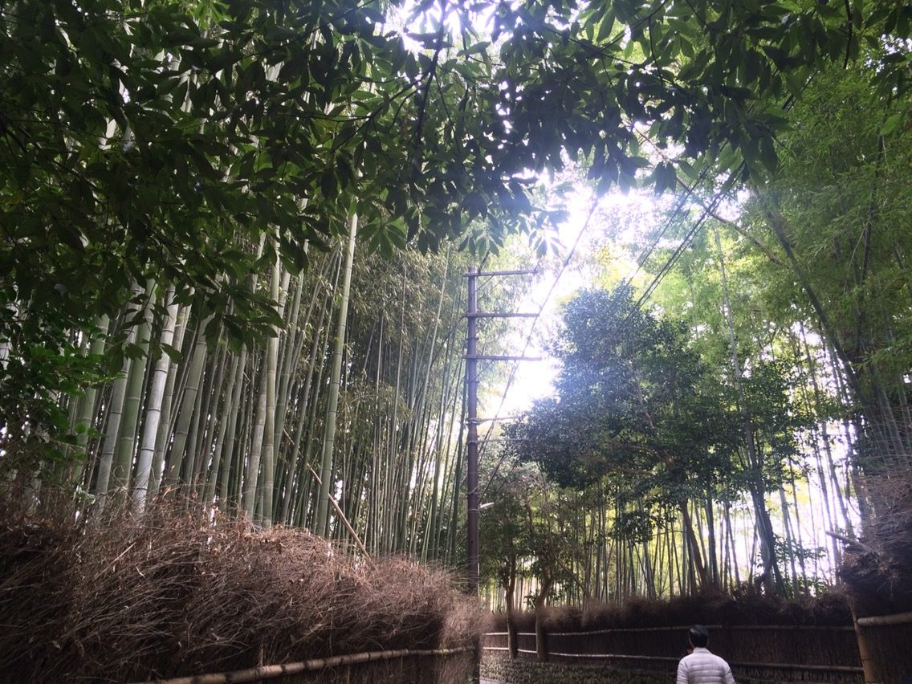
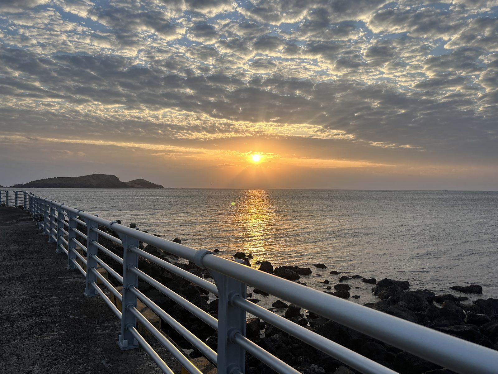
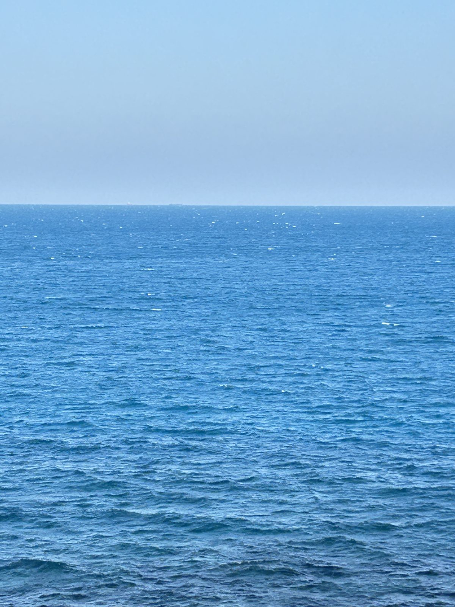
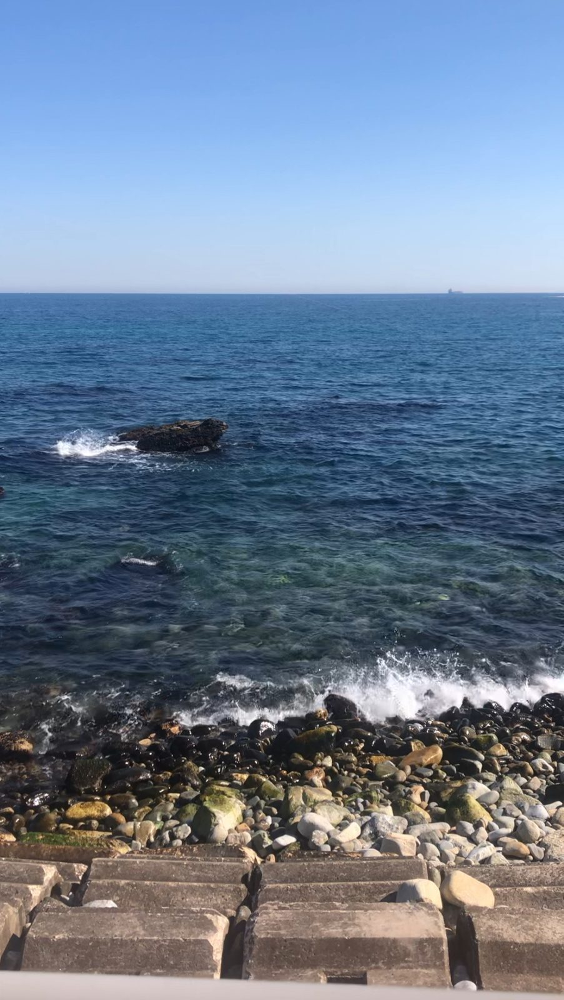

2016년 2월 · 언니와 함께
일본
간사이 → 고베 → 교토 → 오사카
파워J 언니의 분 단위 계획이 솔직히 조금 버거웠어요. 그래서 기억이 흐릿한 부분이 많은데, 대나무숲만큼은 또렷해요. 정말 좋았고, 그 뒤로 대나무를 좋아하게 됐어요.
말차라떼와 편의점 음식이 맛있었고, 스시와 스테이크덮밥도 기억에 남아요.
다시 사진을 보니 우리 언니가 너무너무 예뻤어요.
여행에서는 빽빽한 일정보다 한 장면이 오래 남더라고요. 대나무숲에 다녀온 뒤로 대나무를 좋아하게 됐고, 바다는 발을 담그고 한 시간 넘게 봐도 좋았어요.
여행마다 저에 대해 조금씩 알게 됐어요. 그 이야기를 여기에 차곡차곡 적어 둘게요.
세 번의 여행에서 알게 된 것들이에요.
일본에서 언니의 촘촘한 계획을 따라가며, 기억이 흐릿해질 만큼 바빴다는 걸 알았어요.
동해에서 직접 자세하게 계획을 짜 보니, 계획을 자세히 짜는 과정이 쉽지 않다는 걸 느꼈어요.
제주에서 본 하늘, 동해에서 발을 담그고 보낸 한 시간처럼 풍경이 기억에 오래 남아요.

2016년 2월 · 언니와 함께
간사이 → 고베 → 교토 → 오사카
파워J 언니의 분 단위 계획이 솔직히 조금 버거웠어요. 그래서 기억이 흐릿한 부분이 많은데, 대나무숲만큼은 또렷해요. 정말 좋았고, 그 뒤로 대나무를 좋아하게 됐어요.
말차라떼와 편의점 음식이 맛있었고, 스시와 스테이크덮밥도 기억에 남아요.
다시 사진을 보니 우리 언니가 너무너무 예뻤어요.


2025년 · 친구와 함께
전동바이크를 타며 본 하늘이 정말 예뻤어요. 고기국수는 유명한 곳에서 웨이팅까지 해서 먹었는데 생각보다 아쉬웠고, 카이막이 정말 맛있었어요.
친구가 추천한 카페도 예뻤고, 거기서 바다를 보는 시간이 좋았어요. 한겨울의 야외 온천도 정말 좋았어요. 다만 바람이 많이 불고 밤이 되면 엄청 어두워서 조금 무서웠어요.
감귤은 생각보다 아쉬웠는데, 집에 와서 먹으니 맛있었어요.

2023년 · 엄마와 함께
엄마와 가는 여행이라 이번엔 내가 파워J가 되어 아주 자세하게 계획을 짰어요. 계획을 자세히 짜는 과정이 쉽지 않다는 걸 느꼈어요.
단새우회를 먹었는데 너무 맛있었고, 엄마가 정말 좋아해서 더 좋았어요. 바다 보는 걸 엄청 좋아해서 발을 담그고 1시간 넘게 있었어요.